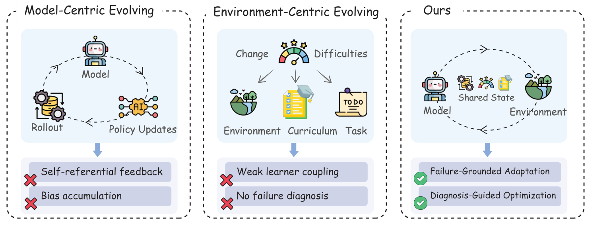
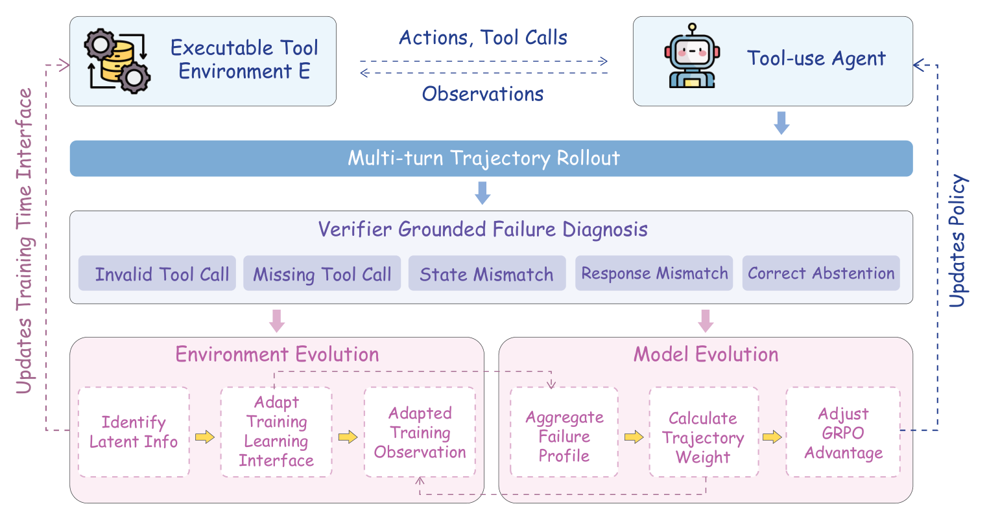
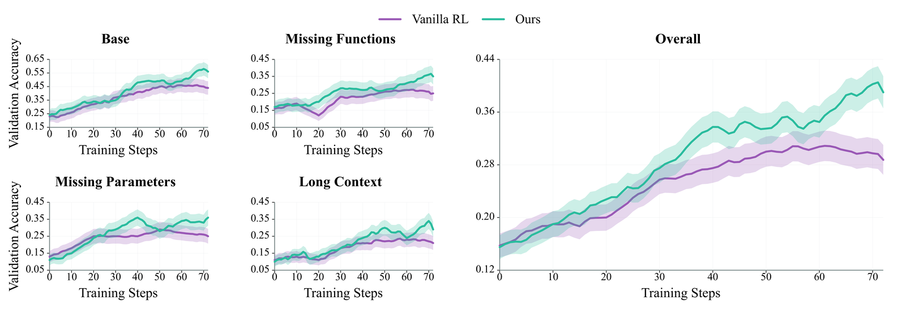

SEAL：让 agent 与它的训练环境协同演化
SEAL: Synergistic Co-Evolution of Agents and Learning Environments
①开源贡献 Open-source Artifacts
本文开源了代码与项目主页：GitHub 仓库给出训练配置、BFCL executable environment 接入、failure diagnosis 模块与数据切分脚本（Apache-2.0，解读日约 47 stars）；project page 提供论文 PDF、poster 与 BibTeX。未发布训练好的模型权重，也未单独打包发布数据集（训练/评测直接复用公开 benchmark：BFCL V3/V4 与 $\tau^2$-bench）。以下链接均于解读当日核实可访问。
| 类型 | 是否开源 | 内容 / 链接 |
|---|---|---|
| 代码 Code | ✔ | github.com/yihaohu0118/SEAL 含训练配置（ exp/SEAL.yaml）、BFCL 执行环境接入、diagnostic 模块、task 管理与训练/评测 split；许可证 Apache-2.0。未提供 release / checkpoint。 |
| 模型权重 Weights | ✘ | 未发布。三个 backbone（Qwen2.5-3B/7B-Instruct、ToolACE-2-Llama-3.1-8B）本身是公开模型，但 SEAL 训练后的 checkpoint 未在仓库或 HF 上提供。 |
| 数据集 Dataset | ✘（复用公开 benchmark） | 不单独发布数据集。低资源训练集是从 BFCL V3 multi-turn（800 例）每类抽 100、共 400 例构造，切分脚本随代码给出；评测用 BFCL V4 与 $\tau^2$-bench。 |
| 环境 / Benchmark | ✘（沿用官方） | SEAL 不改动 benchmark 与 verifier；所用 BFCL 与 $\tau^2$-bench 均为现成公开评测，仓库提供的是接入这些环境、并在训练期叠加 SEAL interface 的代码。 |
| 项目主页 / Demo | ✔（主页，无 demo） | yihaohu0118.github.io/SEAL/：含 paper PDF、poster、GitHub 链接、BibTeX；无在线 demo、无权重/数据集下载。 |
②研究动机与贡献 Motivation & Contribution
背景与问题
LLM agent 越来越靠交互而非静态监督来变强：采 rollout trajectory、拿反馈、再通过 reflection / RL / self-generated supervision 迭代精炼自己——这就是 self-evolution through interaction。它把交互反馈变成可复用的监督来源，比纯离线训练更可扩展。但作者指出，现有 self-evolving agent 几乎都只演化交互闭环里的一侧，于是分裂成两条单边路线：
- (i) Model-centric evolution：通过 rollout replay、self-reflection、reward optimization、post-training 来改 policy。问题在于它们把 agent 优化在一个基本固定的环境上，学习信号完全依赖当前 policy 自己的 rollout 分布。在 long-horizon、sparse-reward 的交互设定里，这种自指（self-referential）分布会带来 policy-induced exploration bias、recovery 不稳定、credit assignment 低效。
- (ii) Environment-centric evolution：去演化 curriculum、task 分布、synthetic instruction、交互经验。它们意识到能力不只由优化决定，也由训练中暴露的经验塑造。但若这种演化没有 grounding 在当前 agent 真实可执行的失败上（它能解什么、在哪反复失败、为什么失败），演化出的环境就只是「更难 / 更多样」，未必命中真正卡住性能的能力缺口。
两条路线表面不同，却暴露同一个结构性 bug：训练环境跟不上 agent 不断移动的能力边界，于是给出的信号要么太静态、要么瞄不准、要么信息量不足。作者把这种错配命名为 Agent-Environment Misalignment。需要强调的是，这里的 "environment" 特指 training-time learning substrate（任务暴露、observation interface、action 约束、recovery 反馈），不是去动评测 benchmark、tool 语义或 executable verifier。

本文的切入点
作者的关键观察是：失败的 rollout 本身就是关于 agent 当前能力缺口的结构化证据，只要它来自 executable 的交互轨迹，就可以被确定性地诊断出「哪一步、什么类型的失败」。于是 SEAL 用 verifier-grounded failure diagnosis 作为一份被两侧共享的信号：同一份诊断既用来演化 training-time interface（补 schema cue、约束、recovery 反馈），又用来按「诊断效用」给 policy-gradient 做 reweight。这带来一种 capability-aware 的环境适配——不靠笼统的「调难度 / 扩数据」，而是对着当前 policy 反复犯的错去调整训练接口，从而采出更有信息量的 rollout，同时保持 benchmark 协议完全不变。
核心贡献
- 提出并命名 Agent-Environment Misalignment：把「policy 能力边界在动、而 learning environment 静止或与 agent 暴露出的失败弱耦合」这一普遍但少被点名的结构性问题显式化，并指出 model-centric 与 environment-centric 两条单边路线其实共享同一个闭环瓶颈。
- 提出 SEAL 闭环协同演化框架：用 verifier-grounded failure diagnosis 作为共享信号，同时 (a) 演化 training-time learning interface、(b) 通过 diagnosis-guided advantage reweighting 引导 policy 优化；全程不改 tool 语义、task label、reward 与 evaluation verifier。
- 在低资源 multi-turn tool-use 上验证有效：仅 400 条训练样本，在 Qwen2.5-3B/7B-Instruct 与 ToolACE-2-Llama-3.1-8B 三个 backbone 上较各自原始 checkpoint 提升 +8.25 / +26.25 / +14.75 平均分（较受控的 Vanilla RL 也多 +4.75 / +9.50 / +8.25），并在 BFCL V4、$\tau^2$-bench 上展现正向 OOD transfer。
③方法 Method
核心 idea：不把 environment 当成只吐 sparse 标量 reward 的固定 executor，而是在训练期额外开一个 verifier-grounded diagnostic interface，把失败交互转成「关于 agent 当前能力缺口」的结构化证据——同时保持 tool 语义、task label、reward 与 evaluation verifier 不变。整个流程是一个闭环：agent 在带 interface 的环境里采 multi-turn trajectory → 诊断成 verifier-grounded 的失败类型 → 这份诊断同时驱动 environment 侧的 interface evolution 与 model 侧的 policy 优化（见下图）。

3.1 问题形式化
把 interactive tool use 建成一个部分可观测决策过程 $$\mathcal{M}=\langle \mathcal{S},\mathcal{A},\mathcal{O},\mathcal{T},O_{\mathcal{E}},H,\mathcal{S}_{\mathrm{goal}}\rangle,$$ 其中 $\mathcal{S}$ 是隐状态空间、$\mathcal{A}$ 是 action 空间（含自然语言回复与对 tool set $\mathcal{F}$ 的可执行 tool call）、$\mathcal{O}$ 是 observation 空间（含对话上下文、tool 输出、execution error）、$\mathcal{T}$ 是转移、$O_{\mathcal{E}}$ 是观测函数、$H$ 是 horizon、$\mathcal{S}_{\mathrm{goal}}$ 是目标状态。给定指令 $q\sim\mathcal{D}$，policy $\pi_\theta$ 与 executable environment $\mathcal{E}$ 交互，诱导出一条 rollout $$\tau=\{(u_i,a_i,o_i)\}_{i=1}^{T}\sim P_{\mathcal{E}}(\cdot\mid q,\pi_\theta),\quad T\le H,$$ $u_i$ 是对话上下文、$a_i$ 是模型 action、$o_i$ 是环境 observation。executable verifier $\mathcal{V}$ 给出终局二值 reward $r(\tau)=\mathcal{V}(\tau,q,\mathcal{E})\in\{0,1\}$，标准 RL 目标即最大化期望成功 $J(\pi_\theta)=\mathbb{E}_{q,\tau}[r(\tau)]$。
问题在于：这个标量 reward 只说「成没成」，不说「为什么失败」。SEAL 因此把训练期反馈增广成一对 $\big(r(\tau),\,Z(\tau)\big)$——$Z(\tau)$ 是从 executable 交互轨迹里抽出的结构化失败诊断。关键是：verifier reward、tool 语义、evaluation 协议一律不动。
3.2 Verifier-Grounded Failure Diagnosis（失败诊断）
对每条 rollout $\tau$，SEAL 产出 turn-level 的诊断标签 $Z(\tau)=\{z_1,\dots,z_T\}$，每个 $z_i\in\mathcal{Z}$ 标出第 $i$ 轮的主导结果 / 失败模式。诊断函数写成 $$z_i=\Psi(a_i,\xi_i,s_{i-1},s_i,\mathcal{F}),$$ 其中 $\xi_i$ 是第 $i$ 轮可拿到的 executable evidence（parser 检查、tool-schema 校验、execution error、可观测的状态转移、verifier 比对），$s_{i-1},s_i$ 是动作前后的状态（如可得）。注意 $\Psi$ 是一个确定性、基于规则的分类器（不是 free-form 的模型 critique），而且优先归因到直接可执行的失败，而非下游的 verifier-level 失败。
当同一轮检测到多种失败信号时，按一个固定优先级取主导标签（优先级表如下）。这样可以避免「明明早先有具体的 tool/argument 错误，却把整条 trajectory 归成笼统的 response 错」：
| 优先级 | 标签 Label | 判据 Rationale |
|---|---|---|
| 1 | invalid_tool_call | action 无法解析，或调用了不存在的 tool。 |
| 2 | argument_mismatch | tool 合法，但必填字段 / 类型 / enum 值 / argument 结构非法。 |
| 3 | state_mismatch | action 执行了，但没产生预期的可观测状态转移。 |
| 4 | recovery_failure | 拿到了 executable error 反馈，但后续轮次仍未能 recover。 |
| 5 | missing_tool_call | 该用 tool 却跳过 / 过早作答，导致失败。 |
| 6 | response_mismatch | tool 交互可接受，但最终回答没过 verifier。 |
诊断不改 reward：失败 trajectory 在原 verifier 下仍是 0 分，标签只是为「interface 演化」和「policy 优化」额外加上训练期结构。
3.3 Learning-Interface Evolution（环境侧：演化训练接口）
SEAL 只演化 training-time learning interface，不碰 benchmark verifier、tool signature、tool 输出或 task label。记原始 observation 为 $o_i$，SEAL 构造增广后的训练期 observation $$\tilde{o}_i=\Omega_t\!\left(o_i,\mathcal{F},H_t,C_t\right),$$ 其中 $H_t$ 是从过往 rollout 累积的 diagnostic context，$C_t$ 是当前 policy 的聚合失败画像（aggregate failure profile，由近期诊断算出）。变换 $\Omega_t$ 只改变已有环境信息「怎样被暴露」，由三个轻量组件相加构成： $$\Omega_t(o_i,\mathcal{F},H_t,C_t)=o_i\;\oplus\;\phi_{\mathrm{schema}}(\mathcal{F})\;\oplus\;\phi_{\mathrm{err}}(o_i,H_t)\;\oplus\;\phi_{\mathrm{cap}}(C_t).$$
- $\phi_{\mathrm{schema}}$ —— 暴露 schema 隐含的 tool affordance：必填 argument、enum 约束、argument 类型、合法的 tool-call 格式。（实现里对应
observation_lite：给参数加[required]标注、列出Allowed values，并附一句「marked [required] 的参数必须如实提供，不要发明 schema 之外的 tool」。） - $\phi_{\mathrm{err}}$ —— 把 execution error 转成面向 recovery 的反馈，但不泄露正确答案。（对应
tool_feedback_evolution：只对失败交互加 hint，例如「缺了必填 argument，请带上这些 key 重发」「该 tool 不接受这个 argument，请按 schema 去掉」「argument 类型不对，请核对 string/int/list」；这些只点明错误类别与被违反的约束，不给下一步正确 call、不给实例级参数值、不给 ground-truth 轨迹。） - $\phi_{\mathrm{cap}}$ —— 从当前 failure profile 里挑能力相关的 cue，让反复出现的错拿到针对性反馈。（对应
diagnostic_evolution：读近期失败统计，往 system prompt 注入能力级行为准则，如 [Cautious-call] / [Active-respond] / [State-aware] / [Scope] / [Format]——是「该不该调 tool、调之前先核对状态」这类通用准则，而非 per-instance 提示。）
关键设计：interface 更新按 failure type 选择，而不是按 benchmark instance 选择。例如 argument_mismatch 激活 schema/约束 cue，missing_tool_call 激活 tool-affordance cue，recovery_failure 激活结构化 error 反馈。这些 cue 只教「怎么修这一类错」，不暴露 reference tool 序列、隐藏参数或答案。评测时 interface 整个被移除。
3.4 Diagnosis-Guided Advantage Reweighting（模型侧：诊断引导的优势加权）
sparse verifier reward 只说一条 trajectory「成没成」，不说它对 policy improvement「有多大用」。在 multi-turn tool use 里，两条同样拿 0 分的失败 trajectory 学习价值可能差很多：「invalid argument / missed tool call」通常比「只在最终回答才暴露的失败」给出更清晰的修正信号。SEAL 因此用诊断去估每条 trajectory 的 learning utility 并据此分配优化压力。
先把 turn-level 标签汇成经验诊断分布
$$p_j(z)=\frac{1}{T_j}\sum_{i=1}^{T_j}\mathbf{1}[z_i=z],\quad z\in\mathcal{Z},$$
捕捉该 trajectory 的主导失败模式。再定义诊断效用函数 $\rho:\mathcal{Z}\to\mathbb{R}_{+}$，$\rho(z)$ 衡量诊断类型 $z$ 有多可操作、可归因：有具体 executable 证据、修复方向明确的失败拿更大效用；更含糊的（如 response_mismatch）拿更小效用。$\rho(z)$ 在所有 backbone 与训练 run 中固定不变，附录给出的取值如下表：
| 诊断标签 | $\rho(z)$ | 理由 |
|---|---|---|
spurious_tool_call | 2.0 | 无效/多余的 tool 调用最易直接归因。 |
correct_abstention | 1.8 | 奖励「该不调 tool 时正确弃权」。 |
empty_turn_model_response | 1.5 | 捕捉漏调 tool / 过早不作为。 |
state_mismatch | 1.0 | 未达到预期环境状态。 |
response_mismatch | 0.9 | 最终回答错，但归因不够局部化。 |
instance_mismatch | 0.6 | 实例级错误有用，但更 noisy、更不局部。 |
pass | 1.0 | 成功 trajectory 保持基线更新尺度。 |
然后算trajectory 级诊断权重并裁剪： $$w_j=\operatorname{clip}\!\Big(\textstyle\sum_{z\in\mathcal{Z}}p_j(z)\rho(z),\;w_{\min},\;w_{\max}\Big),\qquad [w_{\min},w_{\max}]=[0.5,\,2.0],$$ 裁剪是为了防止稀有或 noisy 的诊断模式诱发过大的 policy 更新。给定原始 group-relative 的 GRPO advantage $A_j$，SEAL 得到诊断加权 advantage $$\widetilde{A}_j=w_j A_j.$$
3.5 SEAL 训练闭环
SEAL 在「采样 → 诊断 → interface 演化 → policy 优化」之间交替。第 $t$ 轮：从训练分布抽 prompt，当前 policy $\pi_{\theta_t}$ 在带 interface $\Omega_t$ 的环境里采 $\{\tau_j\}_{j=1}^{N}\sim P_{\mathcal{E}_{\Omega_t}}(\cdot\mid\pi_{\theta_t})$；每条经原 verifier 得 $r(\tau_j)$、经 $\Psi$ 得 $Z(\tau_j)$；把诊断聚合成 policy-specific 失败画像 $C_t=\operatorname{Agg}(\{Z(\tau_j)\})$；据此演化接口 $\Omega_{t+1}=\operatorname{Evolve}(\Omega_t,C_t)$；同时用诊断加权的 GRPO 更新 $$\theta_{t+1}=\operatorname{GRPO}\!\big(\theta_t;\{\tau_j,r(\tau_j),\widetilde{A}_j\}_{j=1}^{N}\big),\quad \widetilde{A}_j=w_jA_j.$$ 于是 policy 暴露能力缺口 → interface 围着缺口适配 → 模型把反馈内化进 policy，形成闭环。全程 tool 语义、task label、转移动态、reward、evaluation verifier 都固定。评测时丢掉 interface wrapper，在原始环境 + 原 verifier 下评 $\pi_{\theta_R}$（附录 Algorithm 1 给出完整伪代码）。
llama3_json，BFCL tool prompt 模式 bfcl_qwen_fc；base tool prompt 对 Vanilla RL 与 SEAL 共享。硬件：4 GPU，TP=1，GPU 显存利用率 0.6，max env workers 32，vLLM 异步 rollout。受控对比：Vanilla RL 与 SEAL 用同一初始 checkpoint、同 400 样本、同 rollout 预算、同 optimizer、同 decoding；唯一区别是 SEAL 额外启用 diagnosis、interface 演化、闭环 failure-profile 更新与诊断加权。两方训练期都不接触 ground-truth 轨迹、隐藏参数值、reference 中间动作或最终答案。注意：主 rerun 的 active 配置实际只开了 base prompt + observation_lite，tool_feedback_evolution 与 diagnostic_evolution 作为完整实现的可选组件记录在附录。一处需留意的口径：附录优先级表用的标签集（
invalid_tool_call / argument_mismatch / …）与诊断效用表用的标签集（spurious_tool_call / correct_abstention / …）命名并不完全一致，本文按原文如实呈现两张表。
④实验评估 Evaluation
评测设置
- In-distribution benchmark：BFCL V3 multi-turn 子集，800 例、四类——Base（信息完整的标准多轮 function calling）、Missing Functions（能否识别「所需 tool 不可用 / 无合适 tool」）、Missing Parameters（能否处理欠定参数而非 hallucinate）、Long Context（长对话历史下的状态跟踪与 tool 使用一致性）。低资源设定：每类抽 100、共 400 例训练，剩 400 例做 held-in 评测。
- OOD benchmark：BFCL V4 的 Web Search 与 Memory 轨道，以及 $\tau^2$-bench 的 Retail / Airline / Telecom 三个客服域。它们在 tool 域、schema 结构、交互模式上都与 BFCL V3 不同；模型只在 BFCL V3 的 400 例上训练，OOD 全程不见。
- Backbone（三个）：Qwen2.5-3B-Instruct、Qwen2.5-7B-Instruct（通用 instruction-tuned agent）、ToolACE-2-Llama-3.1-8B（更强的 tool-specialized 初始化）。
- 对比基线：核心是同设定下的 Vanilla RL（同 split / rollout 预算 / optimizer / verifier reward 的受控对比）；另列若干闭源（Gemini-3-Pro-Preview、Claude-Sonnet-4.5、GPT-4o、Gemini-2.5-Flash）与开源（GLM-4.6 355B、Qwen3-32B、Qwen2.5-14B、xLAM-2-3b-fc-r 等）系统，仅作参考点（规模/训练配方不同，非受控基线）。
- 指标：success rate $\mathrm{SR}=\frac{1}{|\mathcal{Q}|}\sum_q \mathbf{1}[\mathcal{V}(\tau_q,q,\mathcal{E})=1]$，越高越好；类别分在对应子集上算，Average 为各类算术平均。所有评测在原始 benchmark 环境 + 官方 verifier 下进行，SEAL 的训练期 interface 一律关闭。
主要结果（BFCL V3，in-distribution）
下表为 BFCL V3 multi-turn 的主结果（同 400 样本预算），加粗为 SEAL 行；括号是相对各自原始 backbone 的提升。
| 模型（%） | Avg | Base | Miss Func | Miss Param | Long Ctx |
|---|---|---|---|---|---|
| Qwen2.5-3B-Instruct | 5.75 | 11.00 | 6.00 | 3.00 | 3.00 |
| + Vanilla RL | 9.25 (+3.50) | 16.00 | 9.00 | 6.00 | 6.00 |
| + SEAL | 14.00 (+8.25) | 19.00 | 15.00 | 12.00 | 10.00 |
| Qwen2.5-7B-Instruct | 14.00 | 22.00 | 14.00 | 10.00 | 10.00 |
| + Vanilla RL | 30.75 (+16.75) | 46.00 | 27.00 | 27.00 | 23.00 |
| + SEAL | 40.25 (+26.25) | 58.00 | 36.00 | 34.00 | 33.00 |
| ToolACE-2-Llama-3.1-8B | 32.00 | 45.00 | 26.00 | 35.00 | 22.00 |
| + Vanilla RL | 38.50 (+6.50) | 52.00 | 30.00 | 40.00 | 32.00 |
| + SEAL | 46.75 (+14.75) | 58.00 | 46.00 | 44.00 | 39.00 |
作为参考点（非受控、规模差异大）：闭源 Claude-Sonnet-4.5 / Gemini-3-Pro-Preview 在该子集约 61 / 60.75，GPT-4o 42.50；开源 GLM-4.6 355B 68.00、Qwen3-32B 47.88、xLAM-2-3b-fc-r 58.38。怎么读这些数字：
- 三个 backbone 一致提升：较原始 checkpoint，Average 分别 +8.25 / +26.25 / +14.75——既不局限于某个规模，也对已经 tool-specialized 的 ToolACE-2 有效，说明收益不是「只在弱模型上捡漏」。
- 受控对比下仍显著赢 Vanilla RL：在同 split / 预算 / optimizer / verifier 下，SEAL 较 Vanilla RL 多 +4.75 / +9.50 / +8.25 平均分。这说明光靠 sparse 终局 reward 不足以高效学 multi-turn tool use；而且 7B / 8B（起点已较强）上的增益最明显，verifier-grounded diagnosis 的价值并不随起点变强而消失。
- 增益集中在「结构化 tool-use 失败」：对 Qwen2.5-7B，Missing Functions 14.00→36.00、Missing Parameters 10.00→34.00——正是方法针对的错误类型；Long Context 也涨（更好的多轮状态跟踪与 recovery）。这些恰是实际 tool use 里最常见的失败：选对 tool、填对 argument、跨多轮保持一致。值得注意的是，受控的 7B+SEAL（40.25）已超过同口径下若干参考系统的量级（如 GPT-4o 42.50 附近）。
OOD 泛化（BFCL V4 + $\tau^2$-bench）
只在 BFCL V3 的 400 例上训练，迁移到 held-out 设定：
| 模型 | V4 Avg | V4 Web Search | V4 Memory | $\tau^2$ Avg | Retail | Airline | Telecom |
|---|---|---|---|---|---|---|---|
| Qwen2.5-3B-Instruct | 4.69 | 0.00 | 9.38 | 9.64 | 5.26 | 14.00 | 9.65 |
| + Vanilla RL | 5.98 | 0.50 | 11.26 | 10.60 | 6.14 | 16.00 | 9.65 |
| + SEAL | 8.63 | 2.00 | 15.26 | 11.76 | 8.77 | 16.00 | 10.52 |
| Qwen2.5-7B-Instruct | 9.17 | 6.50 | 11.83 | 16.11 | 16.67 | 20.00 | 11.67 |
| + Vanilla RL | 10.26 | 7.50 | 13.02 | 17.19 | 19.30 | 20.00 | 12.28 |
| + SEAL | 12.71 | 9.50 | 15.92 | 20.79 | 26.32 | 22.00 | 14.04 |
两个 backbone 在 BFCL V4 与 $\tau^2$-bench 的聚合指标上都被 SEAL 提升、且都赢 Vanilla RL（如 7B 的 $\tau^2$-bench 16.11→20.79）。作者据此论证 SEAL 学到的是可迁移的 tool-use 行为（argument grounding、error recovery、多轮状态管理），而非仅仅拟合那 400 条 BFCL V3 样本。但作者也如实承认：OOD 绝对分仍偏低，跨 benchmark 泛化依旧困难。
消融与训练动态
由于 diagnosis 是所有组件的共享输入，完全去掉它就退化成 Vanilla RL，所以作者对建立在诊断之上的三个机制做留一消融（Qwen2.5-7B，%）：
| 设置 | Average | Base | Miss Func | Miss Param | Long Ctx |
|---|---|---|---|---|---|
| Qwen2.5-7B-Instruct | 14.00 | 22.00 | 14.00 | 10.00 | 10.00 |
| + Vanilla RL | 30.75 | 46.00 | 27.00 | 27.00 | 23.00 |
| w/o Environment-Side Adaptation | 35.75 | 52.00 | 31.00 | 32.00 | 28.00 |
| w/o Diagnosis-Guided Reweighting | 32.75 | 48.00 | 27.00 | 31.00 | 25.00 |
| w/o Closed-Loop Update | 33.00 | 46.00 | 32.00 | 28.00 | 26.00 |
| Full SEAL | 40.25 | 58.00 | 36.00 | 34.00 | 33.00 |
- 哪块最关键：去掉 diagnosis-guided reweighting（掉到 32.75）比去掉 environment-side adaptation（35.75）跌得更多——说明诊断标签对「分配 policy-gradient 压力」尤其重要。但 environment-side adaptation 也贡献了相对「无它变体」的 +4.50；去掉 closed-loop update 同样掉到 33.00。
- 两侧互补：Full SEAL（40.25）显著高于任一单边变体，证明优势不来自单一配料，而来自「更好的训练期反馈」与「对所采 rollout 更好的优化」之结合。

训练动态印证了闭环设计：随着 policy 的主导失败在变，training interface 被更新去暴露更相关的 cue，而 Vanilla RL 始终只收到同一种 sparse 终局信号——于是早期之后差距持续拉大，提升是跨失败类型累积而非靠单一子集撑起。附录还给了四个 BFCL 定性案例（文件系统状态跟踪、API 参数 recovery、跨域 tool 组合、车控长程状态）与一个 $\tau^2$-bench Telecom 的 OOD 案例：典型对照是 base 模型把猜错的 airport code / stock symbol 当成最终结果、或只口头算油量却从不真正调 fillFuelTank，而 SEAL 模型会把 execution error 当作可恢复证据、补调 get_nearest_airport_by_city / get_symbol_by_name 等前置 tool、并在改状态前先核对当前状态。
⑤洞见 Insights
- 「同一份诊断、两处复用」是这篇最值得记住的方法论：把失败 rollout 诊断出的 turn-level 标签既用来改环境暴露的信息、又用来给 policy-gradient 加权，让 environment 与 policy 围着「当前能力缺口」同步演化——这正是修复 Agent-Environment Misalignment 的杠杆点，也把两条原本割裂的 self-evolution 路线统一进一个闭环。
- 「失败为什么发生」是被 sparse reward 浪费掉的免费监督：在 executable 环境里，失败的归因本可由 parser / schema / 状态转移 / verifier 比对确定性地读出来，却被压成一个 0/1 标量丢弃。SEAL 表明，把这份结构化证据捡回来，就足以在仅 400 样本下把 multi-turn tool use 学得又快又稳。
- 「保持 benchmark 不变」是一个克制但聪明的协议设计：只动 training-time interface、且 advantage 加权恒正（不改符号、不改 verifier 排序），使「提升来自模型真的内化了更好的行为」而非「测试时拿到额外信息」可被干净地归因——这对「自演化是否在作弊」这类常见质疑是有力的回应。
局限与未来
作者自陈的边界：(1) SEAL 依赖 executable 环境——要有 tool schema、execution trace、verifier 反馈，所以更开放、监督更弱的域需要更丰富的诊断机制；(2) 环境演化刻意保守，只改训练接口、不动 tool 语义或 evaluation 规则，保住了公平性却也限制了适配范围；(3) 诊断效用权重 $\rho(z)$ 跨任务/backbone 固定，且跨域泛化仍困难、OOD 绝对分偏低。未来方向：把诊断扩到结构化程度更低的环境、学习自适应的 utility 权重、并研究协同演化如何扩展到更大的 tool 生态与更长 horizon 的 agentic workflow。
我的补充判断：固定的规则诊断器 $\Psi$ 与手调的 $\rho(z)$ 是当前最依赖人工先验的两处；主 rerun 实际只开了 observation_lite，tool_feedback_evolution / diagnostic_evolution 的独立增益尚未被单独量化；另外附录两张诊断标签表命名口径不一，复现时建议以开源代码为准。
与相关工作的关系
按本文自身的框定：相对 model-side self-improvement（recursive skill learning、self-consolidation、reflective prompt 适配、memory-based、interaction-feedback RL——经验只内化进 policy/prompt/memory/skill，环境基本固定），SEAL 是互补的——它把失败 trajectory 不只用于改模型，还当作 verifier-grounded 证据去适配「未来 trajectory 从中被采出的环境」。相对 environment-side adaptation（curriculum / automatic curriculum design / synthetic instruction / task evolution / tool 构造，多停留在 task 多样性、难度、覆盖层面），SEAL 做的是 failure-conditioned 适配：由 verifier-grounded 诊断决定暴露哪些 affordance cue、约束、recovery 反馈与训练信号，去精准命中当前 policy 的能力缺口。相对 agent–environment co-evolution 这一新近视角，SEAL 最接近，但执行的是更严格的协议：benchmark task、tool 语义、executable verifier 全部固定，只以 failure-conditioned、verifier-grounded 的方式演化 training-time learning interface。